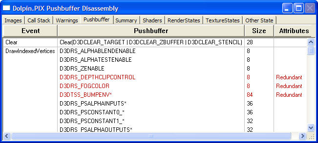

The Pushbuffer Disassembly window shows a disassembled view of the main system push-buffer. It is displayed as a list of commands sent to the GPU, organized by the events PIX has captured.

The disassembler works by looking at the GPU instructions recorded in the push-buffer, and grouping them by their functionality. For some instructions, there is a simple one-to-one correspondence between the function and the instruction, such as for the D3DRS_ALPHABLENDENABLE render state. For others, however, there is no straightforward correspondence, and in these cases the disassembler attributes the instructions to the Direct3D routine that sets them. Examples are the point sprite render states, which are evaluated lazily by Direct3D in the LazySetPointParams routine (which may be seen when using the code profiler). The disassembler attributes those instructions to LazySetPointParams. If you see LazySetPointParams in the disassembly, you can infer that one or more point sprite render states were updated, which forced Direct3D to lazily-evaluate all of the point sprite states at that point.
In many cases, the same GPU instructions are used by more than one Direct3D function. An example is the set of GPU instructions controlling the pixel shader, which can be set by calling SetPixelShader, by the fixed-function pipeline using texture stage states, or by the D3DRS_PSxxxx render states. In these cases, the disassembler uses the lowest-level Direct3D form to describe them, so the pixel shader disassembly shows these as D3DRS_PSxxxx render states.
Because it operates by grouping instructions, the disassembler can't distinguish between successive calls to the same Direct3D function. For example, if a game were to set D3DRS_ALPHABLENDENABLE ten times in a row with no other intervening Direct3D calls, it would show up in the disassembly as a single D3DRS_ALPHABLENDENABLE call. (However, in this case the Size field would be 10 times larger than for a single function call.)
Some function calls also have to update a range of states. An example of this is SetRenderTarget, which has to update the scissors, clip planes, and so on, so those operations will show up in the disassembly even though the game doesn't explicitly set them.
The Size field shows the length of the push-buffer encoding for the corresponding call, in bytes. This value can fluctuate somewhat depending on the encoding state at the time and adjacent GPU instructions. Its intent is to serve primarily as an indicator of how long it takes the CPU to set the corresponding state. In general, the GPU can accept state changes with little overhead, and because most Xbox games are CPU limited, the game should not waste a lot of CPU time avoiding unnecessary GPU state changes. Keep this in mind when looking at the Attributes field, which indicates if a state change is redundant.